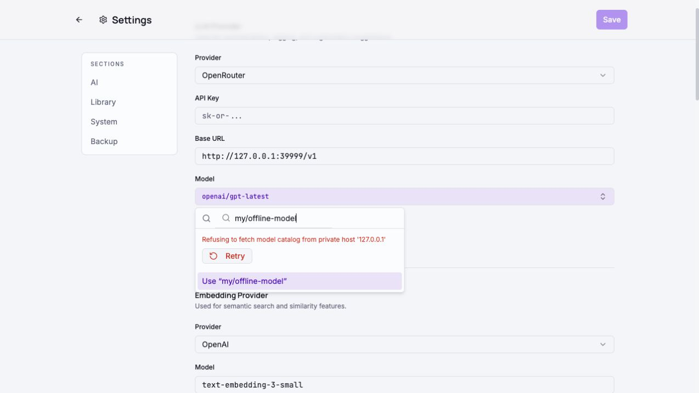
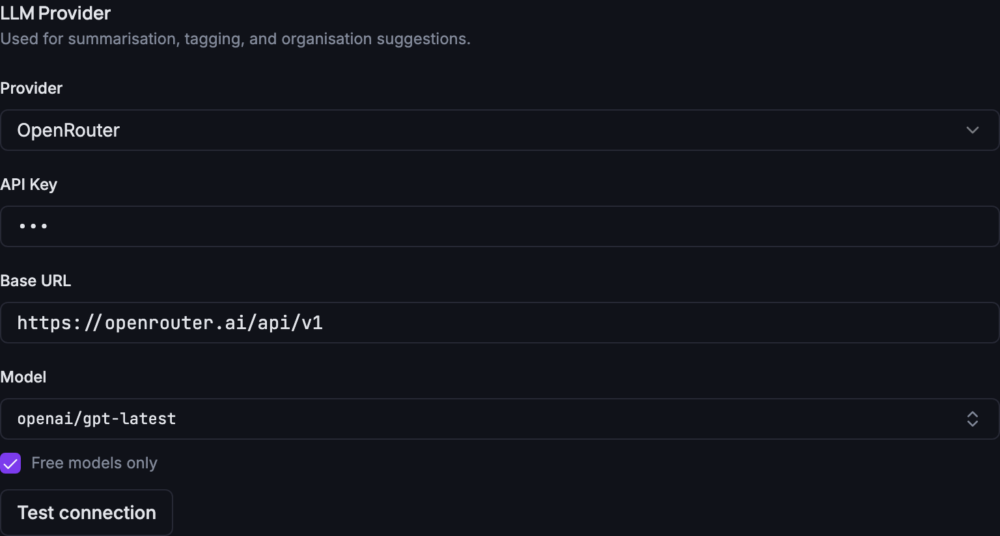

Grimoire Task Reports
August 2026
AI provider configuration improvements and the security/reliability fixes completed during PR #206 review.

PR #206 Review Fixes
Closed GPG fingerprint-pinning, model-catalog redirect, and offline custom-model entry gaps found in the release review.
Security Settings Review

AI Provider Model Picker
Replaced the free-text model input with a live searchable catalog picker for OpenRouter, added a Free models only filter, and dropped the optional ~ fallback prefix from defaults.
Settings AI OpenRouter API